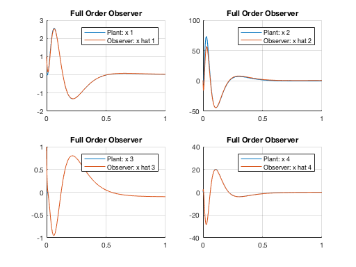
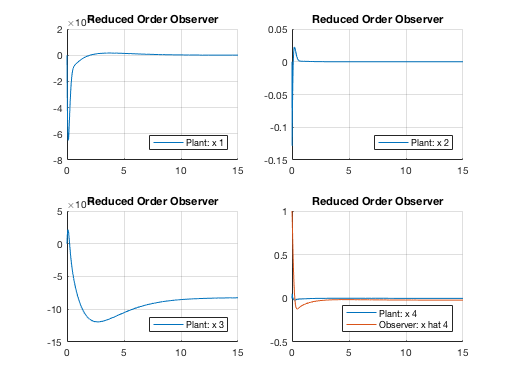

Linear Control Systems Homework 6
- Problem 3
- Author: Xinyi Cai
Contents
Housekeeping
clear all
clc
Given Parameters
A = [0 1 0 0; 30 0 0 20; 0 0 0 1; -2 0 0 -10];
B = [0; -25; 0; 10];
C = [40 0 0 0; 0 0 10 0; 0 0 0 -5];
D = zeros(3, 1);
State Feedback Control Gain
plant = ss(A, B, C, D);
poles_sys = pole(plant);
poles_c = [-15; -30; poles_sys(3:4)]';
K = place(A, B, poles_c);
Full Order Observer
poles_o = 10*poles_c;
L = place(A', C', poles_o)';
A_11 = A;
A_12 = -B*K;
A_21 = L*C;
A_22 = A-L*C-B*K;
A_bar = [A_11, A_12; A_21, A_22];
B_bar = [B; zeros(4, 1)];
C_bar = eye(8);
D_bar = zeros(8, 1);
sys_full = ss(A_bar, B_bar, C_bar, D_bar);
t = 0:0.001:1;
x0 = [zeros(4,1); ones(4, 1)];
u = ones(1, length(t));
y = lsim(sys_full, u, t, x0);
Plot data
figure
for i = 1:4
subplot(2, 2, i); hold on; grid on
plot(t, y(:, i))
plot(t, y(:, i+4))
legend(['Plant: ', 'x ', num2str(i)],...
['Observer: ', 'x hat ', num2str(i)])
title('Full Order Observer')
hold off
end

Housekeeping
clear A_11 A_12 A_21 A_22 A_bar B_bar C_bar D_bar
Reduced Order Observer
A11_r = A(1:3, 1:3);
A12_r = A(1:3, 4);
A21_r = A(4, 1:3);
A22_r = A(4, 4);
B1_r = B(1:3);
B2_r = B(4);
K1_r = K(1:3);
K2_r = K(4);
Lr = place(A22_r', A12_r', -5)'
Ar = A22_r-Lr*A12_r;
Bu = B2_r-Lr*B1_r;
By = Ar*Lr-A21_r-Lr*A11_r;
A_11 = A-B*K1_r*C-K2_r*B*Lr*C;
A_12 = -B*K2_r;
A_21 = -Bu*K1_r*C-Bu*K2_r*Lr*C+By*C;
A_22 = Ar-Bu*K2_r;
A_bar = [A_11 A_12; A_21 A_22];
B_bar = [B; Bu];
C_bar = eye(5);
D_bar = zeros(5, 1);
sys_reduced = ss(A_bar, B_bar, C_bar, D_bar);
x0 = [zeros(4,1); 1];
t = 0:0.01:15;
u = ones(1, length(t));
y = lsim(sys_reduced, u, t, x0);
Lr =
0 -0.2494 -0.0125
Plot data
figure
for i = 1:4
subplot(2, 2, i); hold on; grid on
plot(t, y(:, i))
if i == 4
plot(t, y(:, i+1))
end
legend(['Plant: ', 'x ', num2str(i)],...
['Observer: ', 'x hat ', num2str(i)],...
'Location', 'southeast')
title('Reduced Order Observer')
hold off
end
Warning: Ignoring extra legend entries.
Warning: Ignoring extra legend entries.
Warning: Ignoring extra legend entries.

Part b
C1 = C(1, :);
C2 = C(2, :);
C3 = C(3, :);
Q1 = [C1; C1*A; C1*A^2; C1*A^3];
Q2 = [C2; C2*A; C2*A^2; C2*A^3];
Q3 = [C3; C3*A; C3*A^2; C3*A^3];
y1_rank = rank(Q1)
y2_rank = rank(Q2)
y3_rank = rank(Q3)
y1_rank =
3
y2_rank =
4
y3_rank =
3